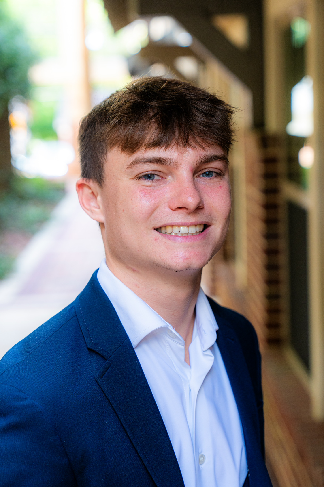
I build machine learning systems for signal and image processing, research verification, and drug discovery, spanning medical imaging, binaural audio, molecular dynamics, and financial modeling. Currently pursuing a B.S. in Data Science at the University of Florida, with an incoming M.S. in Electrical & Computer Engineering.
About
I'm a Data Science student at the University of Florida with research experience across machine learning, computer vision, and signal processing. I've contributed to projects spanning medical image classification, scientific paper verification, computational drug discovery, and spatial audio localization. I also co-authored a paper accepted to the AAAI Spring Symposium (AAAI-MAKE) 2026.
I enjoy building end-to-end solutions, from training deep learning models to shipping full-stack applications. Whether it's a production iOS app, a quantitative finance tool, or a research prototype on HiPerGator, I focus on making ML work actionable and accessible to the people who need it.
Incoming M.S. in Electrical and Computer Engineering
Starting Spring 2027
B.S. in Data Science, College of Liberal Arts and Sciences
Expected December 2026 · GPA: 3.62
Coursework: Applied Machine Learning Systems (EEL5934, graduate section), Data Structures & Algorithms, Linear Algebra for Data Science, Computational Linear Algebra, Probability, Linear Regression, Calculus II & III
Toolbox
Experience
Research Experience
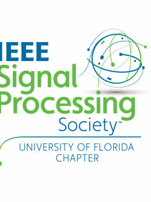
Plato's Cave: Scientific Paper Verification
Aude: Binaural Audio Scene Analysis · Project Lead
Professional Experience
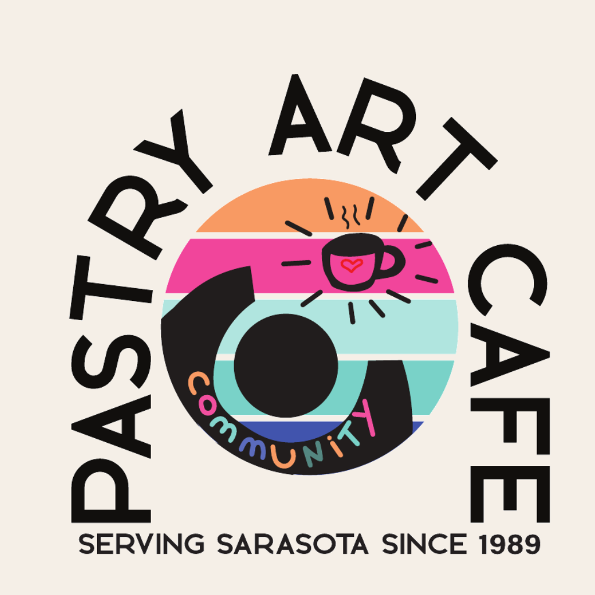
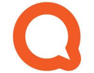
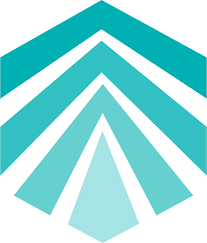
Leadership
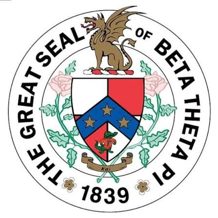
Research Output
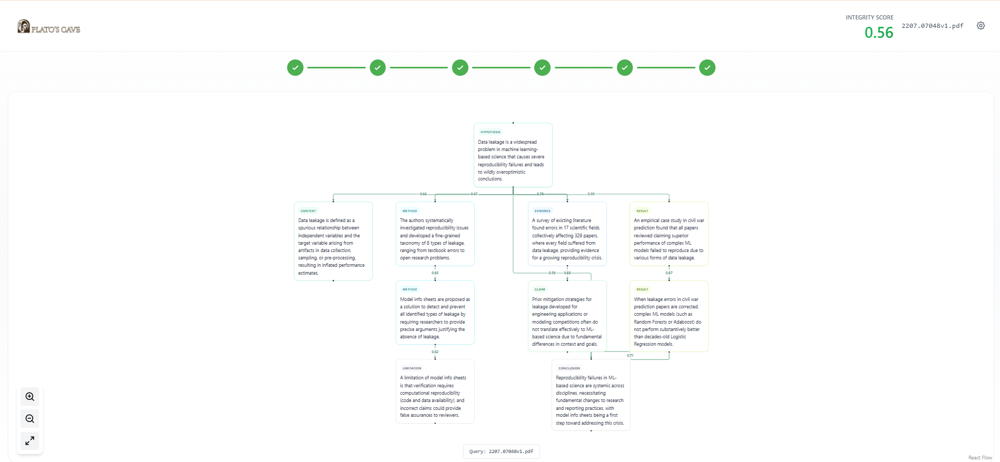
AAAI Spring Symposium on Machine Learning and Knowledge Engineering (AAAI-MAKE), 2026
A research verification system that extracts directed acyclic claim graphs from papers over a ten-role semantic ontology and assigns credibility scores to nodes and edges, with a trust-gating propagation mechanism in which low parent-node trust exponentially attenuates confidence in dependent child claims. Evaluated on 149 records under a K=8 × M=8 resampling protocol yielding 832 sampled DAGs and 6,480 scored trials.
Selected Work
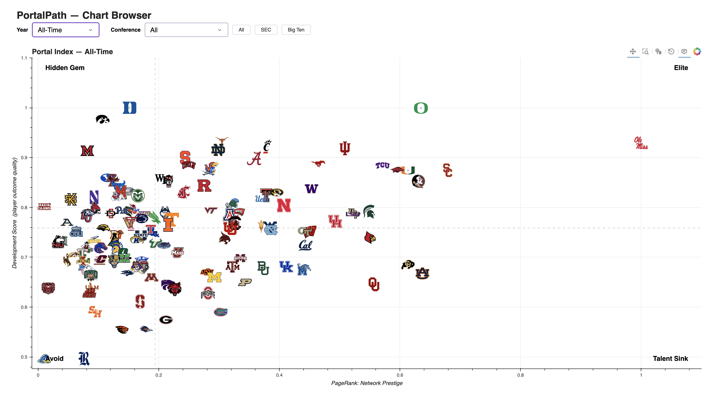
End-to-end data pipeline over the CollegeFootballData API, condensing 726K raw statistical records into a PageRank-based prestige-diffusion model over a 5,201-edge inter-program transfer graph. Deployed with an interactive Dash and Bokeh dashboard.
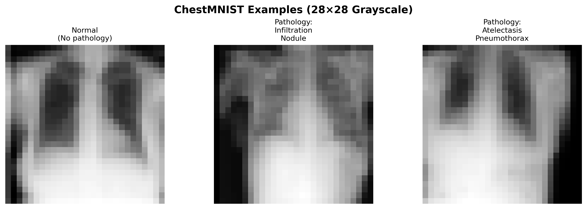
Compared four CNN architectures (249K–16.9M parameters) across chest X-ray and diabetic retinopathy classification, achieving 94.77% accuracy and 83.61% AUC on 14-disease classification over 78,468 images.
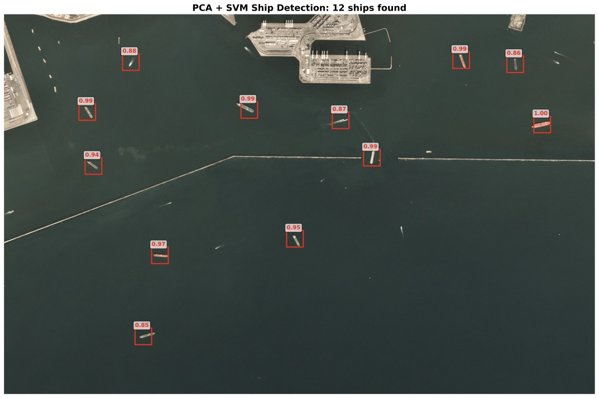
Benchmarked nine PCA/ISOMAP and classifier configurations on 4,000 satellite images, achieving 96.75% accuracy at 82× baseline throughput, while showing the top-accuracy model failed operationally in practice.
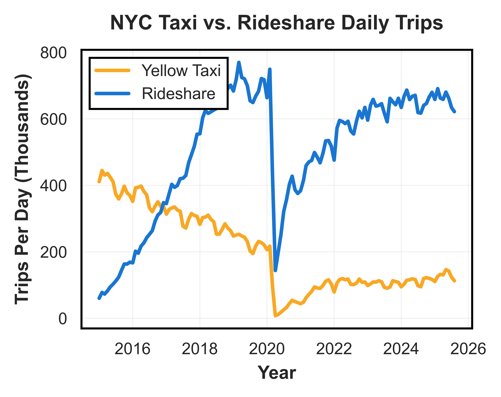
Applied linear and Lasso regression with 5-fold cross-validation to 2023 NYC taxi trip records, predicting fares (R² = 0.93) and tips (R² = 0.55) with interpretable, actionable coefficients for drivers.
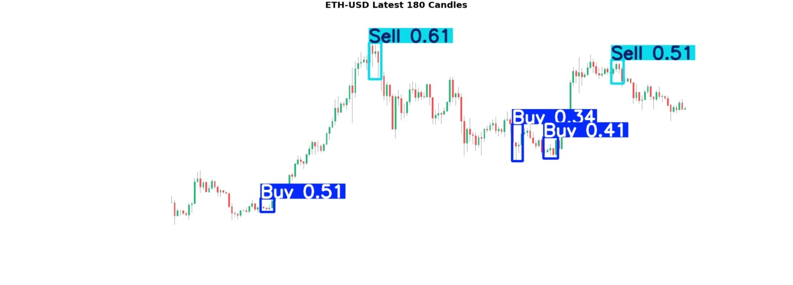
Integrated a pretrained YOLOv8 candlestick-pattern detector into a daily screening pipeline for 500+ equities, with historical backtesting and paper-trade execution via the Alpaca API.
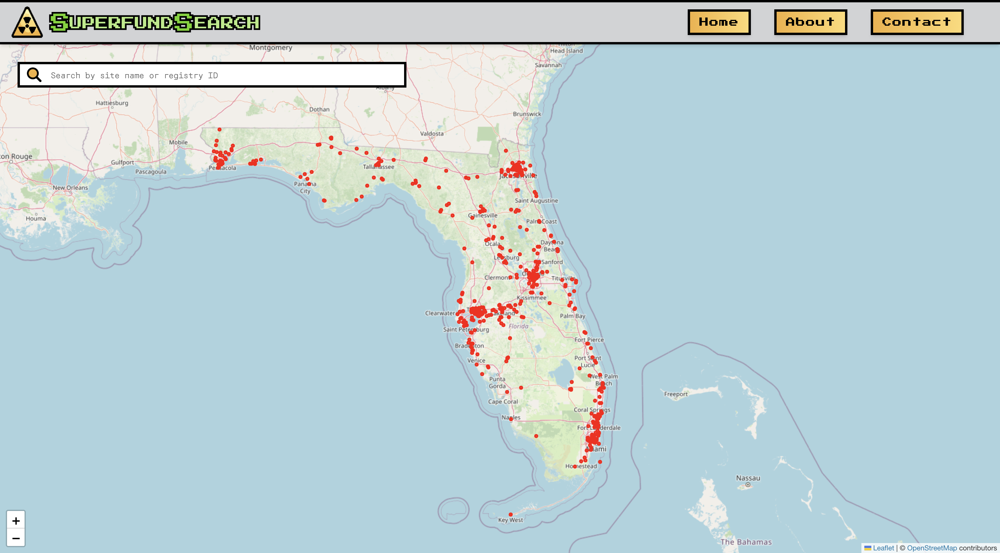
Built an interactive mobile web app mapping Superfund and long-term pollution sites across Florida on a GIS layer, joining site locations to demographic data for environmental-justice research with Data Science for Sustainable Development.
Developed and evaluated facial anonymization approaches that obscure identity against facial-recognition models while preserving semantically important attributes such as emotional expression.
Implemented a complete Minesweeper game with procedural board generation, recursive flood-fill reveal, flagging, and win/loss detection, structured with object-oriented design.
Get In Touch
I'm open to opportunities in data science, machine learning, and financial analytics, particularly roles where I can apply ML models to real-world decision-making and build tools that make insights accessible and actionable.